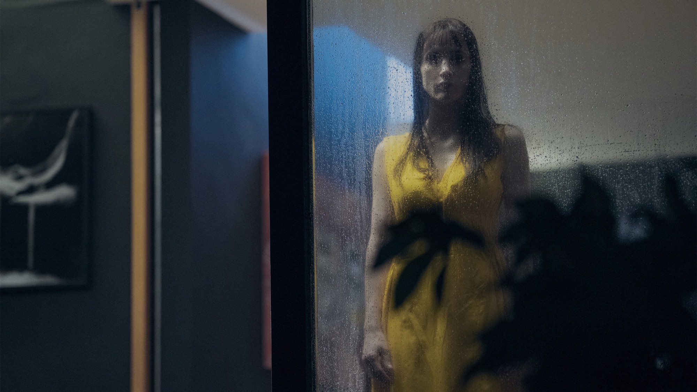
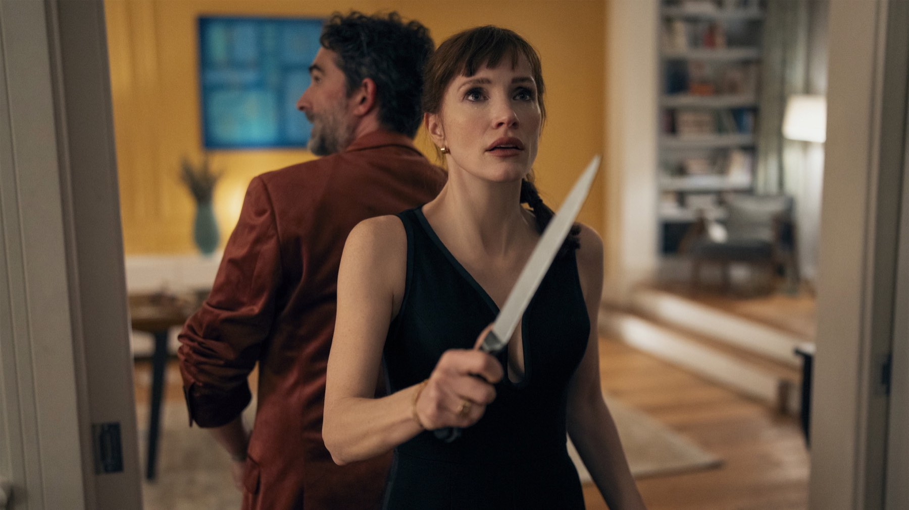
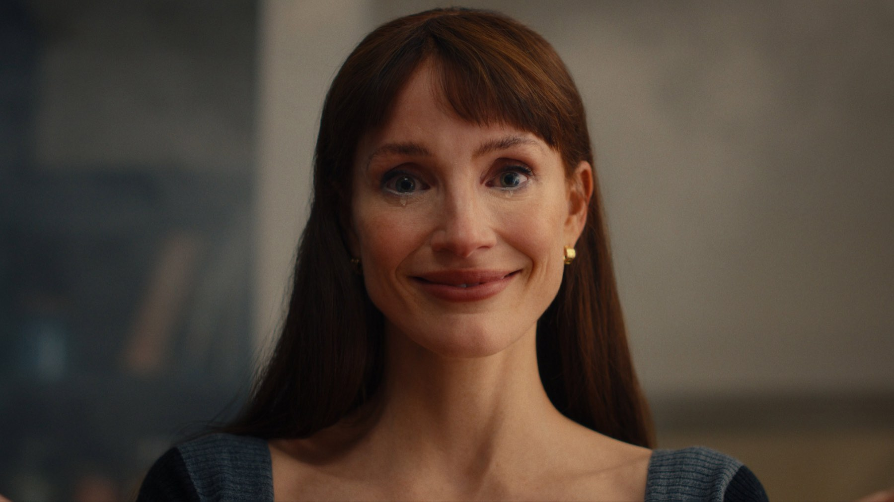

Mammina
Una bambina, una madre che ha il viso giusto e il gesto sbagliato: l'horror di Rob Savage spaventa in casa e si perde quando esce
Mammina ha un'idea sola e buona: una madre con il viso giusto e il gesto sbagliato. Il film di Rob Savage, nelle sale italiane dall'8 ottobre 2026, la tiene viva finché resta in una casa e dentro lo sguardo di una bambina di sette anni che apre la porta del bagno, poi quella dell'armadio, e aspetta. Quando la famiglia comincia a scappare da un rifugio all'altro, però, perde proprio ciò che spaventava.
Di cosa parla Mammina?
Bela cambia scuola e vede crescere la distanza tra i genitori: la madre Ursula pensa alla carriera, il padre Russell, disoccupato, resta a casa con lei. Intanto una presenza con il viso di Ursula le chiede, sera dopo sera, di lasciarla entrare nel suo cuore. Jessica Chastain interpreta sia la madre sia l'entità, mentre Jay Duplass è il padre e Arabella Olivia Clark è Bela. La sceneggiatura di Nathan Elston adatta il romanzo di Josh Malerman Incidents Around the House, uscito in Italia con il titolo L'altra mamma, e il film è prodotto da James Wan con Blumhouse e Atomic Monster.

La scena che vale il film
La scena sta in cucina. Ursula torna a casa all'improvviso, con movimenti rigidi, e Bela capisce che quella non è sua madre. Il cibo brucia, l'allarme antincendio parte e Russell entra proprio mentre l'entità, piegata in modo innaturale, striscia fuori da sotto il bancone: lui sfonda una porta a vetri pur di scappare con la figlia. Qui il film spaventa per un motivo preciso, perché non mostra un mostro ma una persona amata che sbaglia un dettaglio.
William Bibbiani, su TheWrap, elenca gli sbagli: un sorriso teso, un corpo che a volte fluttua di qualche centimetro e a volte ha troppe dita. Aggiunge che il racconto è visto tutto dalla parte di Bela, e per noi è la scelta migliore del film: una bambina di sette anni non ha le parole per dire che cosa non va, quindi lo spettatore resta con lei dentro il sospetto.
Dove si inceppa: una fuga dopo l'altra
Da qui in poi l'entità cresce, e più si ingrandisce meno somiglia a una madre: nel resto del film cambia forma, poi diventa gigante, e a un certo punto solleva Bela fino al soffitto. Il guaio è la struttura. La famiglia scappa quattro volte, prima dall'amico Frank, poi in un fast food, poi dalla nonna Ruth e infine di nuovo a casa propria, e ogni tappa cambia l'ambiente ma non la domanda. Matt Konopka, su Dread Central, riassume il meccanismo con un «rinse and repeat», sciacqua e ripeti.
Eppure l'idea più interessante del film è un'altra, e si vede alla festa di anniversario dei genitori. L'entità prende l'aspetto della babysitter Kelvin, fa sparire gli invitati e tenta di entrare in Bela. Più tardi, a casa di Frank, la bambina trova nel bagno la custodia delle lenti a contatto di Ursula, Russell sospetta un tradimento e l'entità si nutre proprio di quel sospetto: induce Bela a desiderare che Frank sparisca dalle loro vite. Qui il mostro è la crepa del matrimonio che prende voce, quindi sarebbe stato il film migliore, ma la storia lo abbandona per tornare agli inseguimenti.
Dalla nonna arrivano poi gli investigatori, che danno alla famiglia un nome e una regola: è un demone che non può prendere Bela senza il suo permesso. Per noi è l'errore più grave, perché la spiegazione riduce un orrore vago e familiare a un meccanismo da risolvere, e lo schiacciapatate che Bibbiani cita come arma contro l'entità fa ridere proprio nel punto in cui dovrebbe terrorizzare.

Il doppio ruolo di Chastain e il libro
Il doppio ruolo è l'idea migliore e la più rischiosa. Chastain deve interpretare una madre e la sua copia con una differenza minima, e funziona finché la differenza resta nel gesto e nello sguardo, mentre si consuma quando il film la urla invece di sussurrarla. In italiano le dà la voce Chiara Gioncardi, sia per Ursula sia per la sua copia, e questo conta perché sotto una voce sola lo scarto si regge tutto sul corpo e sul sorriso.
Con il libro la distanza è netta. Nel romanzo di Malerman a raccontare era la stessa Bela, e l'entità le chiedeva ogni sera il permesso di entrare, mentre il film tiene la regola del permesso ma la sposta da un'intimità a un ingranaggio della trama. Con Host, il film di Savage girato in tempo reale, il confronto è peggiore: là la tensione non si fermava mai, qui il racconto si ferma a ogni cambio di rifugio.
Accoglienza e numeri
Il film ha esordito negli Stati Uniti con 27,8 milioni di dollari, ma nel secondo weekend ne ha incassati 8,2, con un calo del 70%. Al 3 novembre 2026 gli incassi mondiali erano di circa 110 milioni di dollari, stando a The Numbers, contro un budget di 18-19 milioni. A ottobre Rotten Tomatoes dava il 19% di recensioni positive su 99, con una media di 4,4 su 10, mentre Metacritic assegnava 38 su 100 su 15 recensioni e il pubblico ha dato al film una D+ al CinemaScore. Ha incassato più di cinque volte il budget, ma ha convinto pochissimi.
Per chi è Mammina
È un horror per una serata in compagnia, ma non per chi cerca un incubo costruito sul silenzio. Lo consigliamo a chi ama il brivido di un volto familiare che sbaglia un dettaglio, purché sappia perdonare un secondo tempo rumoroso. Chi cerca la tensione continua di Host o l'angoscia lenta di Hereditary farà meglio a cercare altrove.
Mammina ha una madre che inquieta per un dettaglio sbagliato e un secondo tempo che la spiega fino a svuotarla: lo consigliamo a chi vuole spaventarsi in compagnia, non a chi aspetta un horror d'autore.
Domande frequenti
Quando è uscito Mammina in Italia?
Nelle sale italiane l'8 ottobre 2026. Negli Stati Uniti è arrivato il 9 ottobre con il titolo Other Mommy, dopo che l'uscita era slittata dall'8 maggio.
Mammina è ispirato a Coraline?
No: è tratto dal romanzo Incidents Around the House (2024) di Josh Malerman, pubblicato in Italia da Giunti con il titolo L'altra mamma.
Fa davvero paura?
La prima parte sì, e le recensioni lo dicono quasi tutte: gli spaventi migliori arrivano presto, poi il film diventa più rumoroso e meno inquietante.
Quanto ha incassato Mammina?
Circa 110 milioni di dollari nel mondo al 3 novembre 2026, a fronte di un budget di 18-19 milioni.